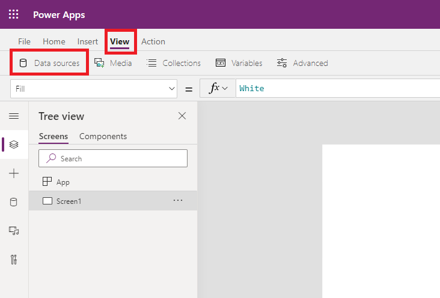
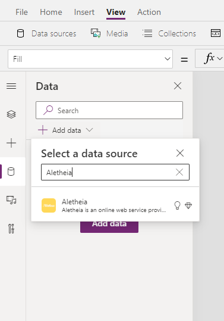
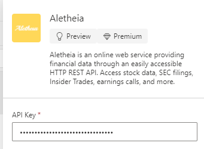
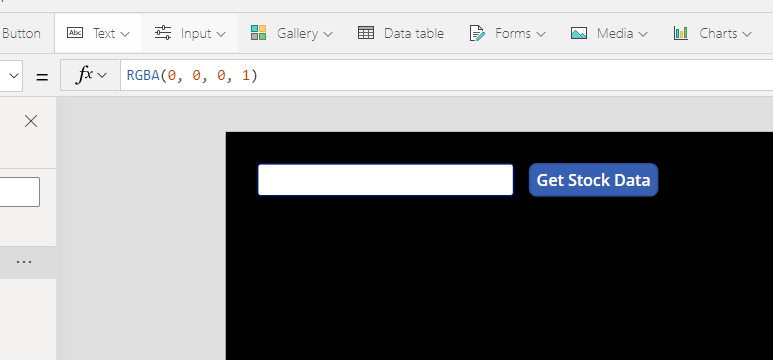
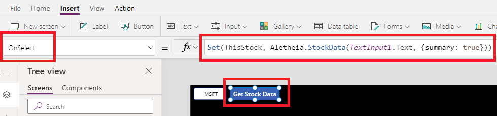
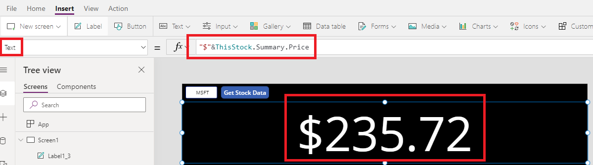
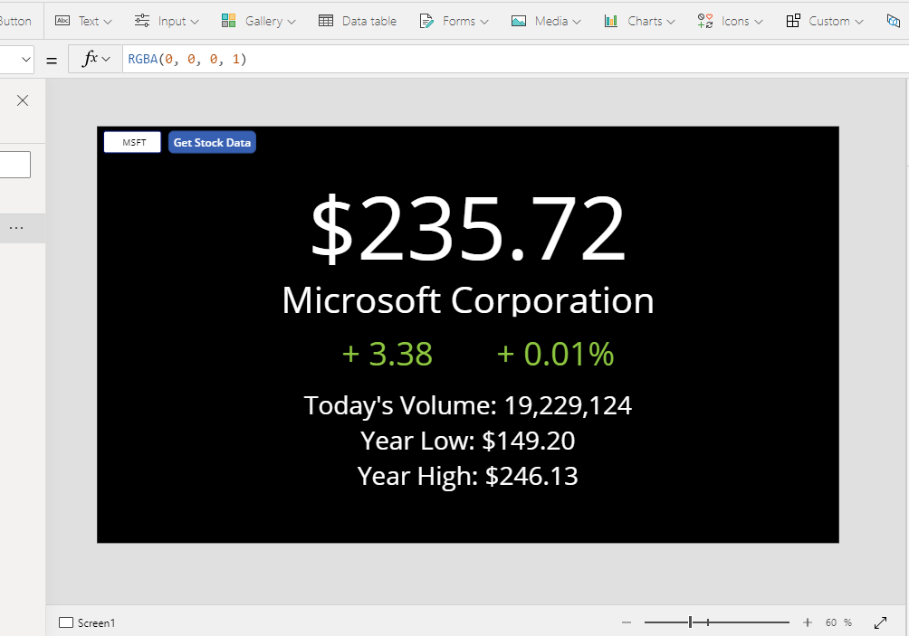
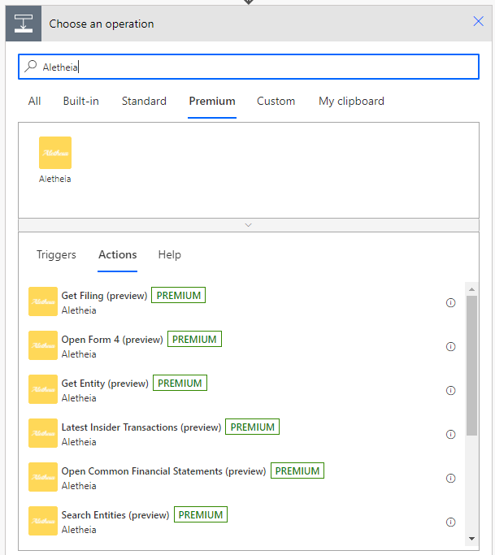
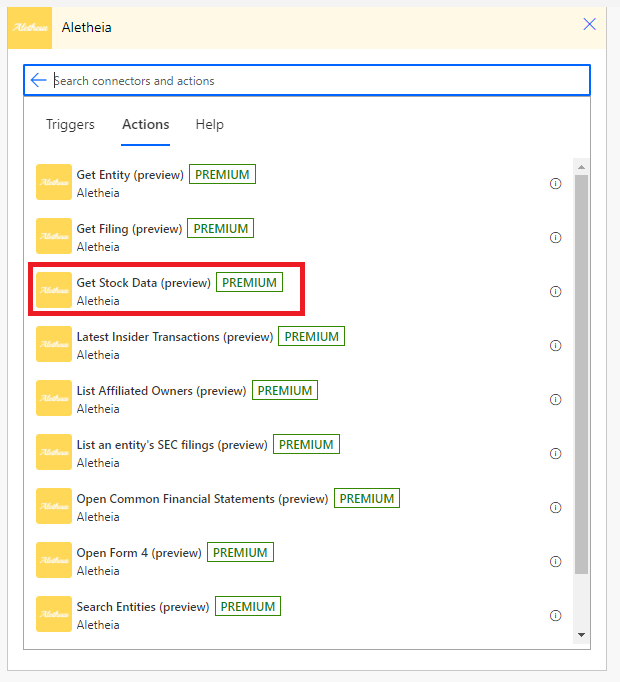
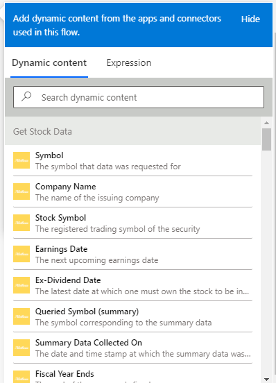

In this tutorial you will learn how to access stock data (prices, open, close, volume, P/E, etc.) for any publicly traded stock or security through the Aletheia connector in Power Apps and Power Automate.
To complete this tutorial you will need the following.
To use the Aletheia connector to access stock data, we first must add the connector as a data source for our app.
Select "Add data" and find the Aletheia connector.
If this is your first time using the Aletheia connector in this environment, you will be asked to input your API key. This is the API key you received when registering for an Aletheia developer account.
For this tutorial we will do a simple one-page app with a text input box where the user will enter in a stock symbol (i.e. MSFT, AAPL, GOOG, etc.) and click on a button to download and display the stock data.
Add a text input control and button like this:
Next, paste the following piece of Power Fx code into the "OnSelect" property for the button:
Set(ThisStock, Aletheia.StockData(TextInput1.Text, {summary: true}))
Explaining the above code, this code is setting a new global variable called ThisStock to a stock data object. We are passing two parameters to the StockData action. The first parameter is the stock symbol that comes from the text content of TextInput1. The second is providing true to the summary parameter, indicating that we would like to access summary data about this stock (company name, price, volumes, market cap, etc).
Next, add a label (text label) to display data in your app.
Set the Text property of your label to:
"$"&ThisStock.Summary.Price
You will likely see with the Power Fx intellisense, there are many more properties you can use from the Summary object in the ThisStock variable. Add additional labels to your app to display these datapoints:
Add a new step to your flow. Find the Aletheia connector under the Premium tab:
After selecting the Aletheia connector, select the Get Stock Data action.
If this is your first time using the Aletheia connector in this environment, you may be prompted to make a new connection by inputting your Aletheia API key and connection name. Use the API key that was provided to you when registering for an Aletheia account.
The Get Stock Data action has three input parameters: Symbol, Include summary data, and Include statistical data.
The Symbol parameter is the trading symbol of the security (stock, bond, cryptocurrency, etc.).
The Include summary data parameter indicates if you are requesting summary data to be returned for this security. Summary data includes information such as company name, price, market cap, volume, and more.
The Include statistical data parameter indicates if you are requesting statistical data to be returned for this security. Statistical data includes information such as last dividend split date and factor, Price/Sales ratio, Cash per share, and more.
Your can use the returned data in downstream actions in your workflow by leveraging the propeties in Dynamic content. All properties are well named and described.
